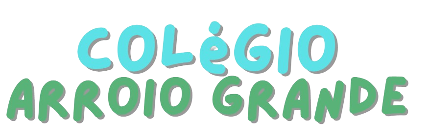
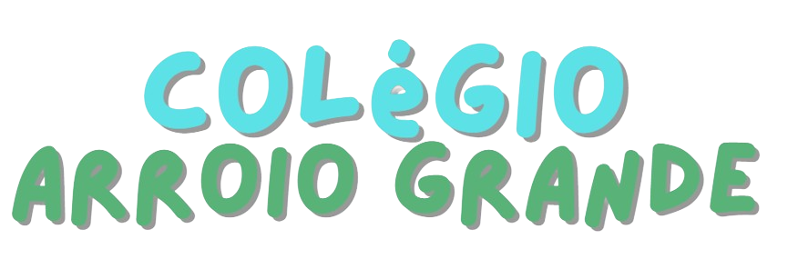
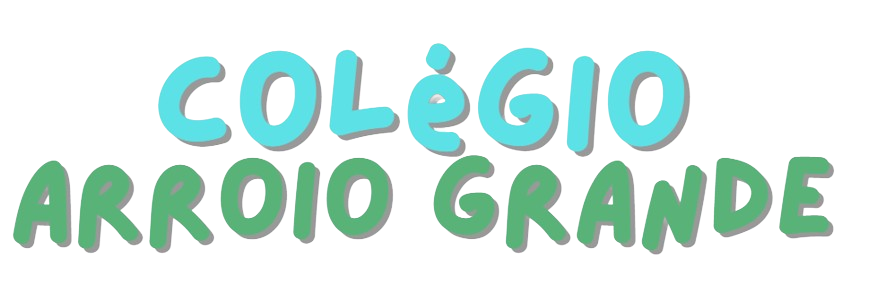
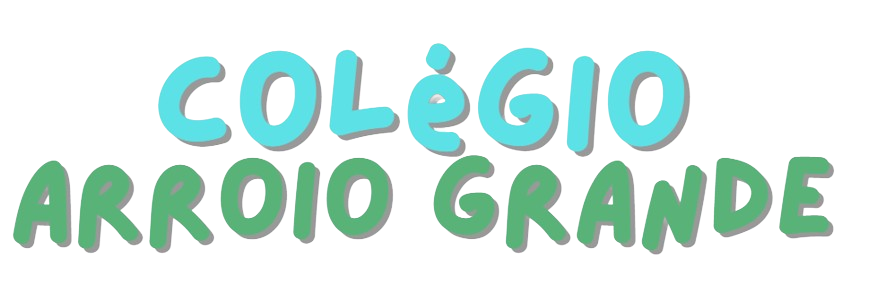

 


Nosso trabalho foi desenvolvido para auxiliar na produção e controle da qualidade da silagem, um alimento muito utilizado para criação de bovinos e equinos, em épocas que não há pasto no campo ou quando os animais são criados em confinamentos, como é o caso das vacas leiteiras..
A utilização da robótica no campo, pode auxiliar muito na produção da silagem, na automação de processos, proporcionando maior eficiência e controle da qualidade, garantindo alimentos adequados para os animais.
Criar uma maneira automatizada de controlar a qualidade da silagem;
Automatizar o silo, com a utilização de arduino, sensor de chuva, sensor de umidade e jumpers.